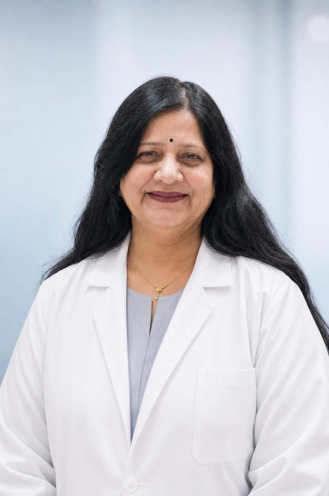
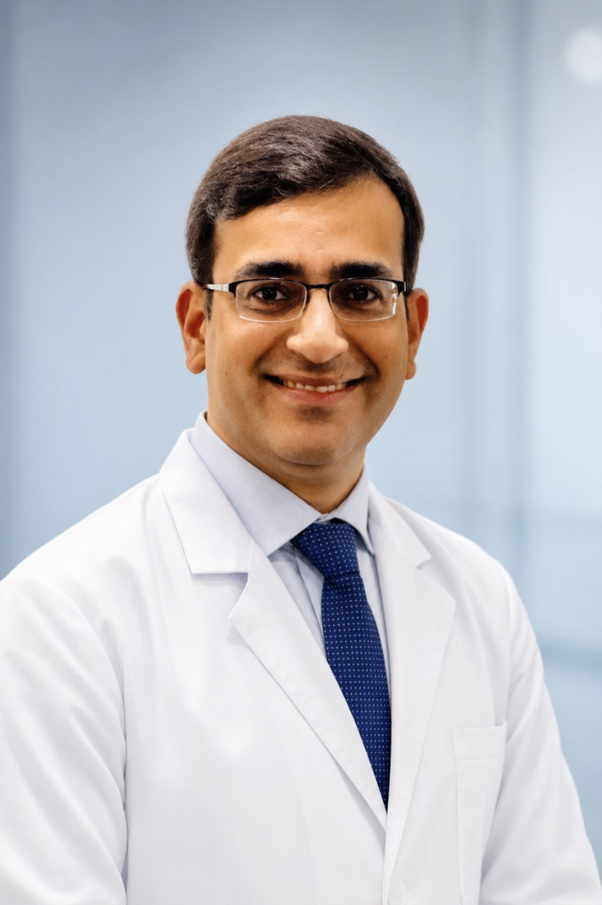
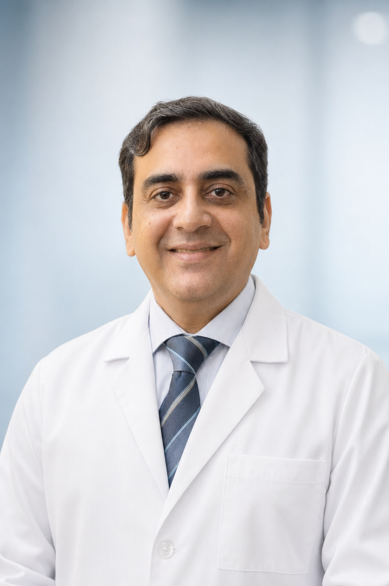

Dr. Geeta Baweja
Consultant Gynaecologist
The gynaecology foundation of the Ropar hospital legacy since 1984.
Professional trial headshots and full doctor listing for review before production launch.

Consultant Gynaecologist
The gynaecology foundation of the Ropar hospital legacy since 1984.

Director · Consultant Dental Surgeon
Senior dental surgeon and hospital director.

Ophthalmic & Refractive Surgeon
UK NHS Cambridgeshire experience, cataract, LASIK, glaucoma and MIGS care.
Gynaecologist & Fertility Specialist
Women's health, pregnancy care, fertility support and laparoscopic gynaecology.

Senior Consultant Psychiatrist
Mental wellness, de-addiction, stress, sleep and confidential family support.
Aesthetic Physician
Skin, laser and aesthetics care focused on natural, medically supervised results.